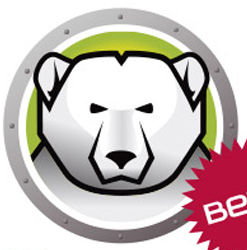

macOS 系统工具

CleanMyMac
Mac 清理与优化工具
Alfred
键盘流效率神器
Alfred 这是一款被称之为Mac效率神器的App，有了Alfred 你甚至无需鼠标就可以实现各种操作，包括出发各种文件、网络操作，其UI界面使用方便，而且不是通过命令来实现，是开发者们和键盘刘童鞋们的神器，比之此前类似的软件——Pack和Power来说完全是秒杀的节奏。
官方网站：@alfredapp （付费）
适用平台：macOS
DOWNLOADTuxera NTFS
让macOS系统读写NTFS格式硬盘
Paste
剪切板增强工具
强大的剪切板增强工具. 可以记录无穷尽的粘贴复制记录用户日后访问时候使用. 界面美观操作简单.Paste for mac 是一款功能强大的mac剪切板记录管理工具，开启这款软件后你复制的所有数据都会在软件中储存，想要使用时直接打开软件找到该内容即可。
官方网站：未知
适用平台：macOS
DOWNLOADHazel
自动化文件管理工具
Hazel 是每一位不懂自动化脚本编程的非技术控Mac用户必用的一款文件自动化管理软件，通过在任意目录下设定多个规则“Rule”就能让Mac进行旧文件归档到指定目录，垃圾文件进Trash，存储的图片进iPhoto 等自动化管理行为，随时保持井井有条~
官方网站：@noodlesoft （付费）
适用平台：macOS
DOWNLOADiPhone管理工具（手机助手）
Windows 系统工具

DeepFreeze 冰点还原
让电脑每次开机系统都是崭新的